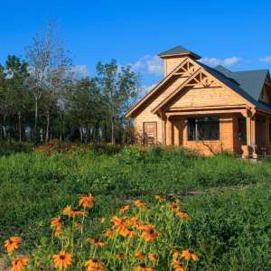

CONSEPT
-コンセプト-
オーベルジュ森のアトリエでは「星と料理と音楽と」をテーマに
宿泊・滞在を通して、他では味わうことのできない様々な体験を提供しています。
併設される南阿蘇ルナ天文台では宇宙とお客様を結ぶ公開プログラムを研究する
「星のコンシェルジュ」達が、九州一の天体望遠鏡だからこそ見える
宇宙の姿をその日の季節・天候、そしてお客様に合わせてご案内をいたします。
星を見る
阿蘇くじゅう国立公園の中、毎晩開催されるプレミアム星空体験ツアー。
高精細の4Kプラネタリウム、高さ６ｍの巨大望遠鏡をそなえた本格的な天文台、星空を見るための草原... 。
すべてツアー参加者の専用なので、余裕を持ってお楽しみいただけます。
料理
「南阿蘇・熊本の食材にこだわる」という原点に立ち返り、出来上がった南阿蘇の創作フレンチのフルコース。
みずみずしい野菜や阿蘇あか牛を中心に、熊本の大地の恵みをお楽しみ下さい。
「星空の西洋料理宿」として、盛り付けにも工夫を凝らしています。
星空のウエディング
結婚指輪と旅の準備をして、ようこそ南阿蘇へ。
式に必要な物は全てご用意しています。
おふたりの大切な記念日を最高の1日にするため、
星のコンシェルジュがお手伝いいたします。
ゲストルーム
約2400坪のガーデンには、舶来の調度品に彩られた遊び心たっぷりの英国調の本館、
レンガや古木を使った森にたたずむ洋館や別館がお客様をお待ちしております。
